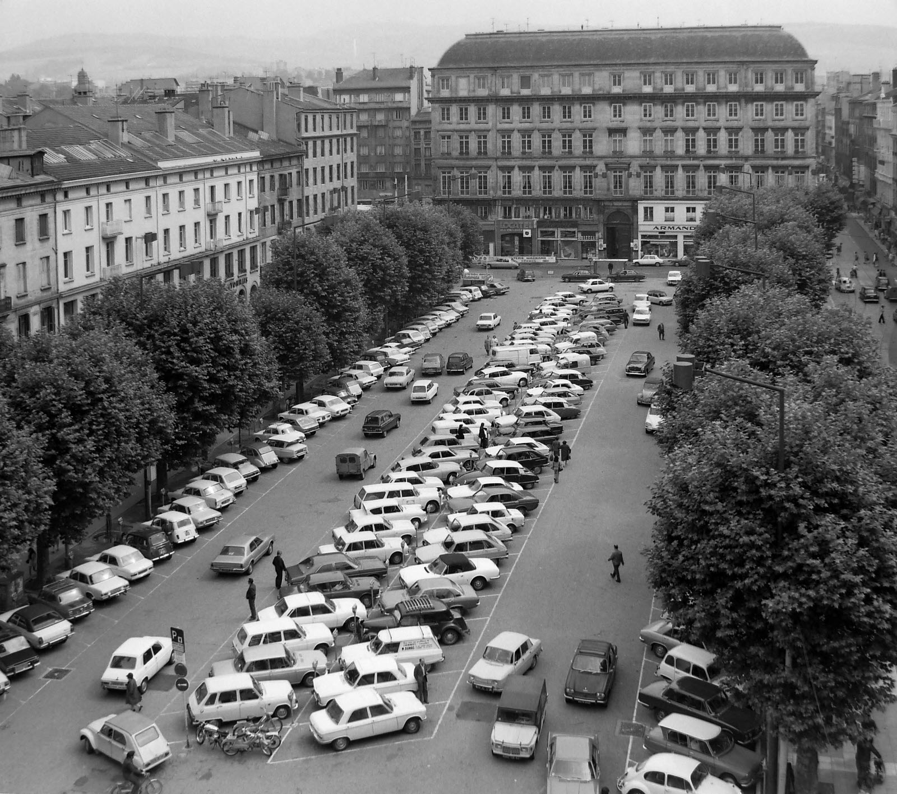

Explora est un établissement de culture scientifique de la Ville de Saint-Étienne, géré par La Rotonde, centre de culture scientifique, technique et industrielle de l’École des Mines.
Et la réponse de la question précédente est :
c) un parking
Le parking à ciel ouvert a été remplacé par le premier parking souterrain de la ville en 1976. La place est connue pour accueillir certains événements comme la Fête du Livre dont la première édition stéphanoise a eu lieu il y a 35 ans !

Une nouvelle question pour la route,
Le bruit généré par les transports est nocif pour la santé. On estime ainsi que les personnes les plus exposées au bruit routier ont une espérance de vie réduite de :
a) 2 mois
b) 3 ans
c) 10 ans
Votre prochaine et dernière étape est le site principal de l'école des Mines de Saint-Etienne
information itinéraire